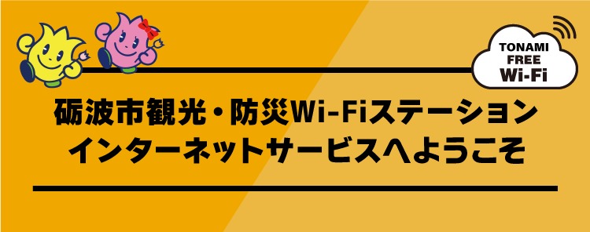
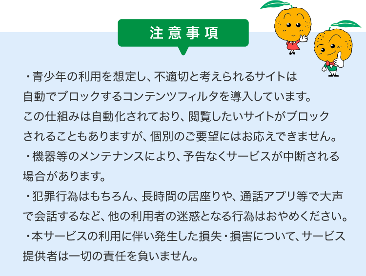

本ページ下部の「ログイン」ボタンをクリックまたはタップしていただくと、１５分間無料でインターネットが利用できます。
※
一度のログインで１５分間利用可能です。（不正アクセスなどの犯罪目的使用や、長時間にわたる利用を防止するためです）
※
１５分でいったん切断されますが、再度ログインして利用いただくことも可能です。

この注意事項を理解し、遵守できる方は下のログインボタンからクリックまたはタップしてご利用ください
（お問い合わせは）
となみ衛星通信テレビ株式会社
0120-476-764 平日9:00～17:30